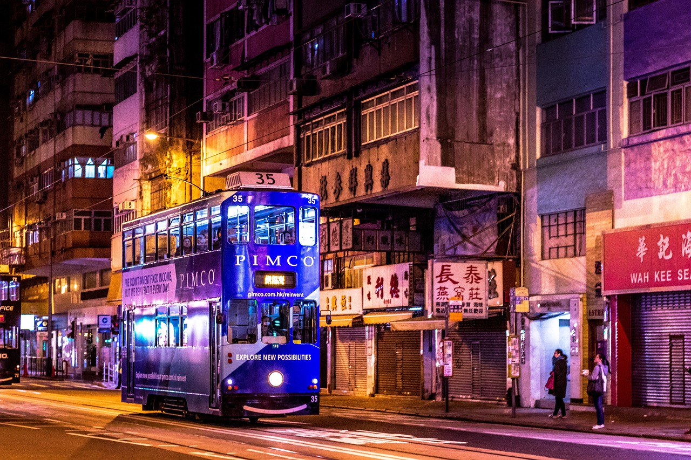

Transportation Information
Arrival
Almost all visitors arrive to Taniti by air, though some arrive on a small cruise ship that docks in Yellow Leaf Bay for one night per week. Taniti is served by a small airport that can accommodate small jets and propeller planes. Taniti is in the process of expanding the airport so larger jets will be able to land on the island within the next few years.
Ground Transportation
Public buses serve Taniti City and run from 5 a.m. to 11 p.m. every day. Private buses serve the rest of the island. Taxis are available in Taniti City, and rental cars can be rented from a local rental agency near the airport. Bikes and helmets are available to rent from several vendors (helmets are required by law). Taniti City is fairly flat and very walkable. Many tourists stay in the area surrounding Merriton Landing: this area is easy to explore on foot.
